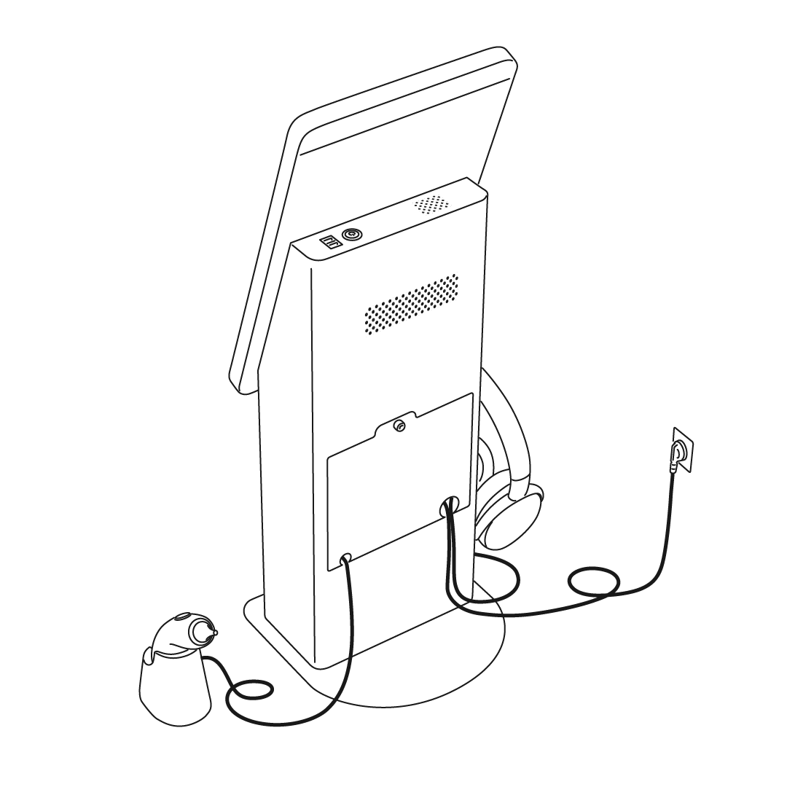

후면부 커버 임의 개패 금지
키오스크의 전원 연결을 확인하세요.
프린터 전원 및 용지를 점검하세요. 용지 장착 방법은 프린터 안쪽에 적혀 있습니다.
사운드 카드와 헤드폰이 연결되어 있는지 확인하세요.
화면 상단 헤드폰 아이콘 표시를 확인하세요.
안드로이드 설정에서 설치 환경 별 유/무선 인터넷 연결을 확인하세요.
기기 볼륨이 MAX 상태인지 확인하세요.
